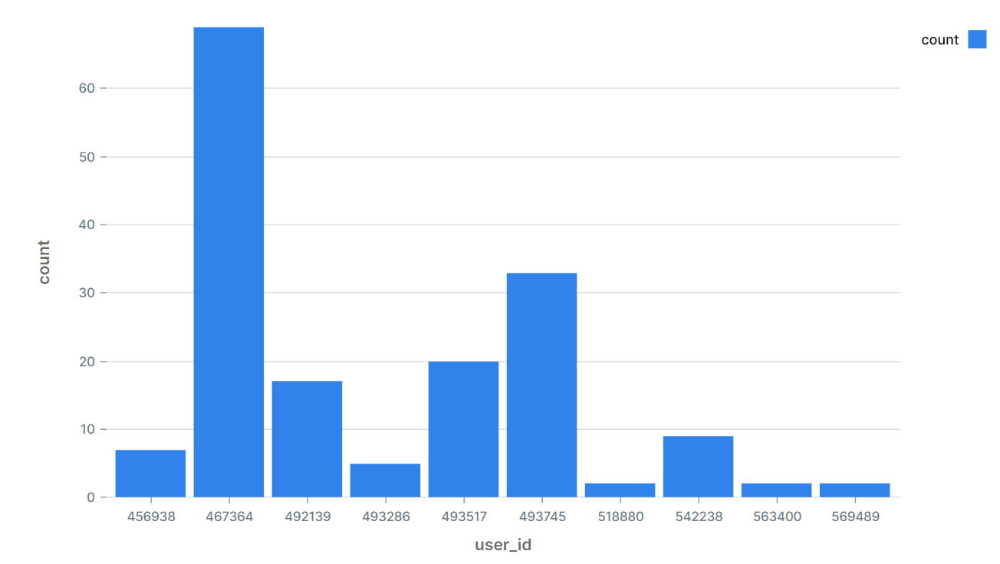
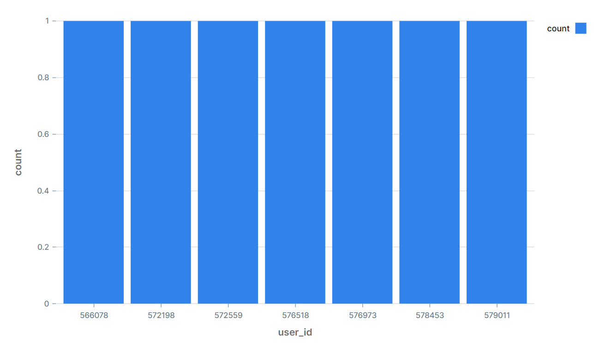

Plotting the number of times event-names were used by users
This will give an insight into which features (event-names) were most often used by users and could give an indication as to which features should be improved most (made more user-friendly).
SELECT events.name, COUNT(*) FROM events GROUP BY 1;
Looks like the 'Start Subscription' feature is not doing too well, indicating perhaps that users are not willing to subscribe. The company could try and improve upon this aspect in the future. Let's see
how many times this feature has been used.
SELECT count(events.name) FROM events WHERE events.name = 'Start Subscription';
Only 7 times...
Plotting the top 10 users of the most used event-name feature
Given that we know that the most used event-name feature is 'Add Image' we can simply query the following:
SELECT events.user_id, COUNT(events.name)
FROM events
WHERE events.name = 'Add Image'
GROUP BY 1
LIMIT 10;

But what if we did not know the most used event-name feature? We can solve this by 1) finding the amount of times each feature was used, 2) finding the most used feature (max) and 3) substitute this into the where statement of the query above, like so:
SELECT events.user_id, COUNT(events.name)
FROM events
WHERE events.name = (
SELECT DerivedTable.Names
FROM (SELECT events.name AS Names , count(events.name) AS counts FROM events GROUP BY 1) AS DerivedTable
WHERE DerivedTable.counts = (
SELECT MAX(DerivedTable.counts)
FROM (SELECT events.name AS Names , count(events.name) AS counts FROM events GROUP BY 1) AS DerivedTable
)
)
GROUP BY 1
LIMIT 10;
This is quite a lengthy piece of code, nevertheless I was surprised at how quickly it was able to compute this (0.688 seconds, compared to the 0.656 seconds from the query above). This might just have to do with my internet connection, however, since I am extracting this data from an external server. Let me know if you know a quicker way of doing the above!
Anyway, having automated the query above further, we can easily also find the users that got a subscription (i.e. used the most unused feature).
SELECT events.user_id, COUNT(events.name)
FROM events
WHERE events.name = (
SELECT DerivedTable.Names
FROM (SELECT events.name AS Names , count(events.name) AS counts FROM events GROUP BY 1) AS DerivedTable
WHERE DerivedTable.counts = (
SELECT MIN(DerivedTable.counts) -- Switching MAX to MIN
FROM (SELECT events.name AS Names , count(events.name) AS counts FROM events GROUP BY 1) AS DerivedTable
)
)
GROUP BY 1
LIMIT 10;
